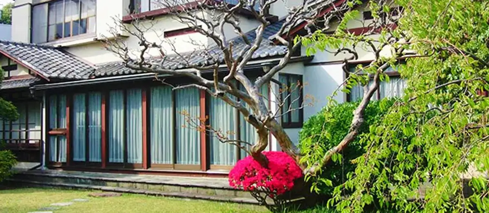
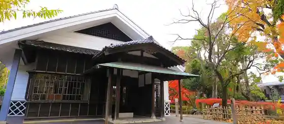
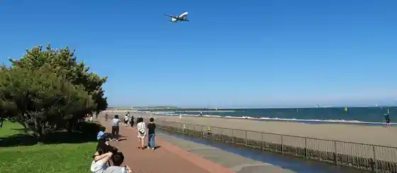

Otaku, Tokyo: things to do, food and stays
Otaku · Tokyo
Otaku
Highlighted on the Tokyo map.

Sights
Otaku Ritsu Kumagaya Tsuneko Memorial Museum
Otaku Tateyama O Sodo Memorial Museum

Jonanjima Seaside Park

Omori Nori no Furusato Kan
Tokyo Port Wild Bird Park
Ikegami Umezono
Heiwajima Natural Hot Spring
Igarashi Kenji Kinen Sentaku Museum
Edo Koji
Haneda Airport Terminal 3
Granduo Kamata
Heiwa no Mori Park
Otaku Ritsu Kyodo Museum
Umagome Bunshi Village
Dining
pizzeria fabbrica 1090
ピッツェリア ファッブリカ 1090

European restaurant in Otaku, Tokyo.
Shinjiko Shijimi Chuka Soba Kohaku Tokyo honten
宍道湖しじみ中華蕎麦 琥珀 東京本店

Noodle restaurant in Otaku, Tokyo.
Natsuya no Chuka Soba
奈つやの中華そば

Noodle restaurant in Otaku, Tokyo.
HIIKI
らーめん飛粋

Noodle restaurant in Otaku, Tokyo.
Niboshi Tsukemen Miyamoto
煮干しつけ麺 宮元

Noodle restaurant in Otaku, Tokyo.
Ramen Tei Hinari Ryuou
らーめん亭 ひなり竜王

Noodle restaurant in Otaku, Tokyo.
Maru Ichi
丸一

Meat restaurant in Otaku, Tokyo.
Ramen Hazuki
らぁめん 葉月

Noodle restaurant in Otaku, Tokyo.
itokito
イトキト

Sweets and bakery shop in Otaku, Tokyo.
NIBOSHI MANIA

Noodle restaurant in Otaku, Tokyo.
Tonkatsu Aoki no Curry Ya Ippekoppe Kamata honten
とんかつ檍のカレー屋 いっぺこっぺ 蒲田本店

Meat restaurant in Otaku, Tokyo.
Menya Mahoroba
麺屋 まほろ芭

Noodle restaurant in Otaku, Tokyo.
Tonkatsu Enraku
とんかつ燕楽

Meat restaurant in Otaku, Tokyo.
Tonkatsu Aoki Kamata honten
とんかつ檍 蒲田本店

Meat restaurant in Otaku, Tokyo.
Oshokuji Maruyama
お食事 まるやま

Meat restaurant in Otaku, Tokyo.
Schomaker
ショーマッカー

Sweets and bakery shop in Otaku, Tokyo.
LA MARGHERITA
ワインレストラン ラ・マルゲリータ

European restaurant in Otaku, Tokyo.
CIVITAS
シビタス

Cafe in Otaku, Tokyo.
Chuka Soba Sato
中華そば さとう

Noodle restaurant in Otaku, Tokyo.
Ramen Kan 2 Ya Kamata ten
ラーメン 環2家 蒲田店

Noodle restaurant in Otaku, Tokyo.
Grill Suzukou
ぐりる スズコウ

Meat restaurant in Otaku, Tokyo.
Mori Iro Reservation
もりいろ

Noodle restaurant in Otaku, Tokyo.
Flowers&Spanish Sonrisa

European restaurant in Otaku, Tokyo.
Washokuya Taichi
和食や 太いち

Izakaya or bar in Otaku, Tokyo.
Coffee Tei Ruan
珈琲亭 ルアン

Cafe in Otaku, Tokyo.
Unagi Heihachi
うなぎ 平八

Seafood restaurant in Otaku, Tokyo.
Ramen Jun Kamata ten
らーめん 潤 蒲田店

Noodle restaurant in Otaku, Tokyo.
Mi Rei
ミ・レイ

Chinese or Asian restaurant in Otaku, Tokyo.
Aomori Niboshi Waka Seimen
青森煮干 和渦製麺

Noodle restaurant in Otaku, Tokyo.
Ryumon
龍門

Chinese or Asian restaurant in Otaku, Tokyo.
Chuka Soba Kikutani
中華そば きくたに

Noodle restaurant in Otaku, Tokyo.
Chuka Soba Isobe
中華soba いそべ

Noodle restaurant in Otaku, Tokyo.
Ocha to Okashi Mayanchi
お茶とお菓子まやんち

Cafe in Otaku, Tokyo.
Okonomiyaki Fukutake
お好み焼き 福竹

Japanese restaurant in Otaku, Tokyo.
Chugokuryori Nikura
中国料理 にいくら

Chinese or Asian restaurant in Otaku, Tokyo.
Chuka Soba Ketsu.
中華そば 結。

Noodle restaurant in Otaku, Tokyo.
Stay
Villa Fontaine Grand Haneda Airport | Sumitomo Realty & Development
ヴィラフォンテーヌ グランド 羽田空港｜住友不動産

Villa Fontaine Grand Haneda Airport | Sumitomo Realty & Development is a place to stay in Otaku, Tokyo.
Haneda Excel Hotel Tokyu
羽田エクセルホテル東急

Haneda Excel Hotel Tokyu is a hotel in Otaku, Tokyo.
JR-East Hotel Mets Omori
JR東日本ホテルメッツ 大森

JR-East Hotel Mets Omori is a hotel in Otaku, Tokyo.
Hotel Metropolitan Haneda
ホテルメトロポリタン 羽田

Hotel Metropolitan Haneda is a hotel in Otaku, Tokyo.
Quintessa Hotel Tokyo Haneda Comic & Books
クインテッサホテル東京羽田 Comic&Books

Quintessa Hotel Tokyo Haneda Comic & Books is a hotel in Otaku, Tokyo.
Keikyu EX Inn Keikyu Kamata-Station
京急EXイン京急蒲田駅前

Keikyu EX Inn Keikyu Kamata-Station is an inn in Otaku, Tokyo.
T Mark City Hotel Tokyo Omori
Tマークシティホテル東京大森

T Mark City Hotel Tokyo Omori is a hotel in Otaku, Tokyo.
Hotel JAL City Haneda Tokyo WEST WING
ホテルJALシティ羽田 東京 WEST WING

Hotel JAL City Haneda Tokyo WEST WING is a hotel in Otaku, Tokyo.
Hotel JAL City Haneda Tokyo
ホテルJALシティ羽田 東京

Hotel JAL City Haneda Tokyo is a hotel in Otaku, Tokyo.
Keikyu EX Inn Kamata
京急EXイン蒲田

Keikyu EX Inn Kamata is an inn in Otaku, Tokyo.
Hotel Oriental Express Tokyo Kamata
ホテル オリエンタル エクスプレス 東京蒲田

Hotel Oriental Express Tokyo Kamata is a hotel in Otaku, Tokyo.
Keikyu EX Inn Haneda
京急EXイン羽田

京急EXイン羽田 is an inn in Otaku, Tokyo.
Hotel Bar Grantios Annex
ホテルバーグランティオス別邸

Hotel Bar Grantios Annex is a hotel in Otaku, Tokyo.
Hotel MyStays Haneda
ホテルマイステイズ羽田

Hotel MyStays Haneda is a hotel in Otaku, Tokyo.
Hotel Amaneku Kamataeki Mae
ホテルアマネク蒲田駅前

ホテルアマネク蒲田駅前 is a hotel in Otaku, Tokyo.
Hotel MyStays Kamata
ホテルマイステイズ蒲田

Hotel MyStays Kamata is a hotel in Otaku, Tokyo.
Mercure Tokyo Haneda Airport
メルキュール東京羽田エアポート

Mercure Tokyo Haneda Airport is a place to stay in Otaku, Tokyo.
Hotel Route-Inn Tokyo Kamata - Ayamebashi -
ホテルルートイン東京蒲田－あやめ橋－

Hotel Route-Inn Tokyo Kamata - Ayamebashi - is a hotel in Otaku, Tokyo.
APA Hotel <Keikyukamata-Ekimae>
アパホテル〈京急蒲田駅前〉

APA Hotel <Keikyukamata-Ekimae> is a hotel in Otaku, Tokyo.
Tokyu Stay Kamata
東急ステイ蒲田

Tokyu Stay Kamata is a place to stay in Otaku, Tokyo.
Henn na Hotel Tokyo Haneda
変なホテル東京 羽田

Henn na Hotel Tokyo Haneda is a hotel in Otaku, Tokyo.
APA Hotel < Haneda Anamori Inari Ekimae >
アパホテル〈羽田 穴守稲荷駅前〉

アパホテル〈羽田 穴守稲荷駅前〉 is a hotel in Otaku, Tokyo.
Chisun Hotel Kamata
チサンホテル蒲田

Chisun Hotel Kamata is a hotel in Otaku, Tokyo.